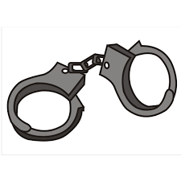

Terry Toops and his two friends, Warren Cripe (who was a minor during the time) and Ed Raisor, were drinking at Toops' house and decided to go out for a drive that night. Cripe drives due to the other being too intoxicated to drive and they begin their drive at 3 am. During their drive, Cripe notices police officials were following them because of Toops' crazy actions and he becomes nervous and decides to let go of the wheel and jumps into the backseat. As the car loses control, Toops jumps into the driver's seat and regains control of the car. They are pulled over and Toops takes a breath test. His BAC was .21%; he was placed under arrest, and was charged with Criminal Recklessness, Operating a Vehicle Without a Seat Belt, and Driving Left of Center.